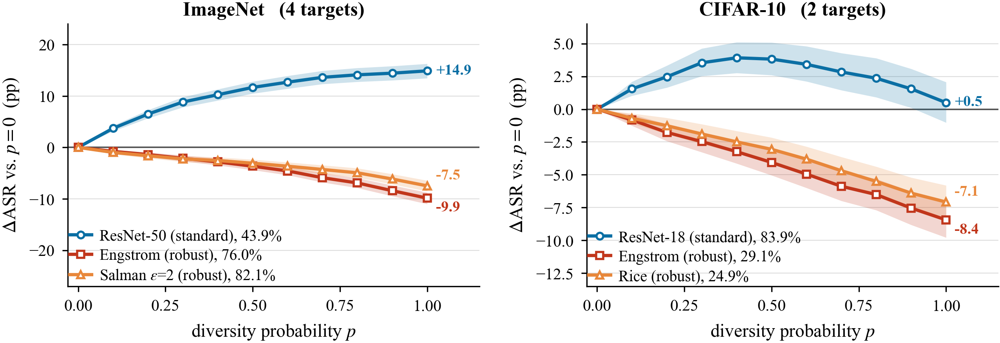
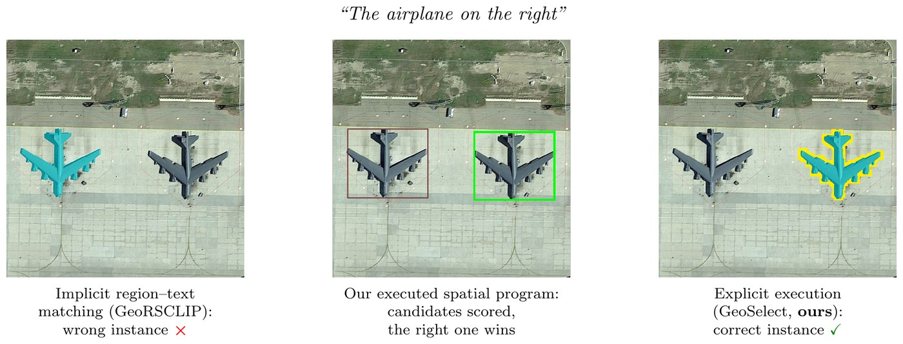
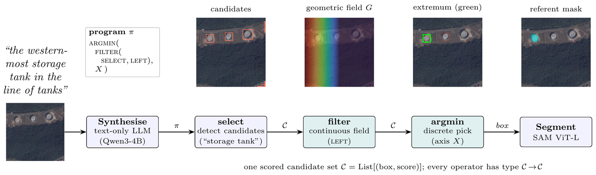
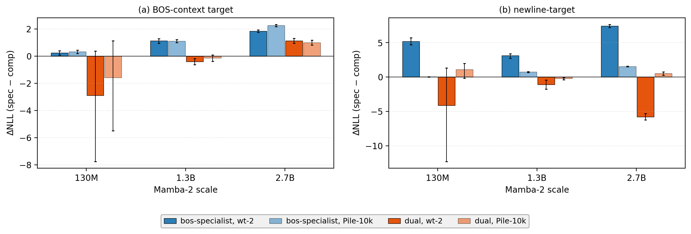

Publications
-
"The Scissors Effect: When Resize-Based Input Diversity Helps or Hurts Transfer Attacks"
Transactions on Machine Learning Research (TMLR), 2026
[project page] [arxiv] [openreview] [code]Yuhang Jiang, Xiaojing Chen
Abstract & figure
AbstractInput Diversity (DI), a random resize and pad applied at each attack iteration, is a near-default ingredient of transfer-based attacks, widely assumed to improve transferability. We show this assumption is regime-dependent and, for adversarially trained surrogates, often reversed. Holding the attack fixed and varying only the surrogate, raising the DI probability improves transfer from standard surrogates but degrades it from robust ones: the two response curves separate like a pair of scissors, a pattern we call the Scissors Effect. On ImageNet, blind DI costs a robust source 10.3 percentage points of attack success across four architecturally diverse targets; the effect is several times smaller at 32×32. Direct measurement supports a bias–variance account: DI displaces the gradient by a comparable amount on both groups but reduces its variance only where the gradient is noisy, and robust surrogates have little noise left to average away. A gradient-consistency probe, frozen and hashed before the runs, predicts the sign of the effect on seven unseen surrogates, and we report where it fails alongside where it works. The practical consequence holds independently of the mechanism: leaving DI enabled by default understates the attack a robust surrogate can mount, and so overstates the robustness of the model being evaluated.

Change in transfer ASR relative to p=0. Raising the Input-Diversity probability improves transfer from standard surrogates but degrades it from adversarially trained ones. Left: ImageNet, four standard targets. Right: CIFAR-10, two standard targets. Bands are 95% image-paired bootstrap intervals. -
"PInVerify: An Offline Embodied Benchmark for Active Instance Verification"
Poster, FMEA Workshop @ CVPR 2026
[project page] [arxiv] [openreview] [code]Yuhang Jiang (sole author)
Abstract & figure
AbstractEmbodied agents have made strong progress in navigating to target objects, but reaching the goal vicinity does not guarantee that the agent has found the correct instance: subtle attribute differences (e.g., "white floral" vs. "white striped") often require close-range, multi-view inspection. We address this gap with Active Instance Verification (AIV), a task in which an agent actively selects viewpoints around a candidate object to decide whether it matches a fine-grained natural-language description. We formalize AIV as a finite-horizon decision process and introduce PInVerify, an offline embodied benchmark for AIV: 3,000 evaluation episodes across 18 object categories, delivered as multi-view captures with a 6-sector navigation topology that exposes trap views (navigable but uninformative) and unreachable sectors. As reference baselines we build a training-free pipeline and a LoRA-fine-tuned end-to-end agent around open-source multimodal large language models (MLLMs) at on-device scale (≤8B parameters), with attribute decomposition, a visibility-weighted multi-view tracker, and three next-best-view (NBV) strategies. In our evaluation across Qwen3-VL (4B/8B), SenseNova-SI-1.2-InternVL3-8B, CLIP, and SigLIP2, the best MLLM-based baseline exceeds the best embedding baseline by 4.9 pp; GT-box ablations show a +3.1 pp detection gap; and we do not observe reliable gains from active viewpoint selection within the tested NBV strategies. A LoRA-fine-tuned agent (SFT+GSPO) reaches 85.6%. PInVerify aims to support further work on active, fine-grained semantic verification in embodied AI.

Geometric success ≠ semantic success: reaching the goal vicinity does not confirm the correct instance, so AIV selects viewpoints to verify fine-grained attributes. 
Dataset capture: each offline episode is built from top-down camera poses around the goal and per-sector RGB observations with paired segmentation masks. 
Two reference agents: a training-free modular pipeline (top) with attribute decomposition, per-view verification, multi-view tracking, and next-best-view selection; and an end-to-end LoRA-fine-tuned agent (bottom). -
"GeoSelect: Spatial-Program Execution for Training-Free Referring Remote Sensing Image Segmentation"
IEEE TGRS, under review
[project page] [arxiv]Yuhang Jiang, Guohui Deng*, Miaozhong Xu, Chao Ruan, Jinling Zhao, Linsheng Huang
Abstract & figures
AbstractReferring remote sensing image segmentation segments the object named by a natural-language expression in an aerial image. Existing training-free methods resolve the expression through implicit vision–language activations or region–text similarity, which gives weak control over the spatial, superlative, and ordinal relations that dominate aerial referring, such as the rightmost ship or the second court from the left. We propose GeoSelect, a training-free pipeline that reframes referring as the execution of a typed spatial program. A frozen, text-only language model synthesises the expression into a small domain-specific language, a well-formedness checker accepts the program, and a deterministic executor runs it. The central abstraction is a single scored candidate set type under which every operator composes: continuous geometric fields realise position and proximity, while discrete set and order operators add the extremum, ordinal, top-k, and relational constructions that fields alone cannot express. Execution is explicit, so every intermediate is inspectable, and a reliability ladder degrades any failing program to the field-only special case. GeoSelect achieves 58.86 mIoU on RRSIS-D test and 55.27 mIoU on RISBench test, more than twice the best prior training-free method on RRSIS-D, with no referring supervision and on a single GPU. Under a fixed detector and segmenter, explicit execution improves over implicit selectors under the same backbone; the best-box-IoU and outcome-partition diagnostics motivate complementary tests of proposal recall and program-path behaviour, with the program path the clearer priority on RISBench, and an exposure audit shows comparable accuracy on the audited unseen subset. Code and configurations will be released upon acceptance.

Why explicit execution: for a spatial expression over several same-class objects, implicit region-text matching (left) picks the wrong instance, while GeoSelect synthesises and executes a typed spatial program that scores the candidate set (middle) and returns the instance matching the ground truth (right). Same candidates and segmenter; only the selector differs. 
The pipeline executes a typed spatial program over a single scored candidate set: a frozen text-only LLM synthesises the program, the executor evaluates it bottom-up (select candidates, continuous field filter, discrete argmin), and SAM segments the chosen instance. A real per-operator trace is shown above each stage. -
"Task Structure Reverses Layerwise State Encoding in Sequence Models"
arXiv preprint
[arxiv]Yuhang Jiang (sole author)
Abstract & figure
AbstractMechanistic studies of sequence models often treat layerwise state encodings as architectural traits: recurrent models concentrate readable state, attention-based models distribute it. We find that the same architecture instead reverses this profile when the task changes. Across Transformers, Mamba, Mamba-2, LSTMs, and GRUs, Parity is concentrated late in Mamba and the recurrent baselines and built gradually by Transformer; on bounded-depth Dyck-k the pattern flips. The same flip appears in fine-tuned Mamba-130M and Pythia-160M, and the Pythia Dyck bottleneck persists at 410M. Two candidate explanations are conflated in the literature: algebraic structure (commutativity) versus computational structure (prefix update vs. stack). To separate them we add a third task: non-commutative S3 permutation composition. S3 groups with Parity, not Dyck, on layerwise probing across all five architectures and on Mamba-specific Conv1D attribution. In this task suite, the grouping tracks computational structure rather than commutativity. Causal interventions show that, in the 4-layer formal models, linearly readable directions are often functionally necessary and can remain important at out-of-distribution lengths on Parity and Dyck. At pretrained scale the picture splits. Fine-tuned Pythia Dyck has a strong middle-layer bottleneck (L6-L7 ablation drops accuracy by roughly 81% at 160M; broader L4-L18 plateau at 410M), far weaker and noisier at the best-probe layer. Pretrained Mamba shows the complementary failure mode: its final layer is highly readable, no single probe direction breaks the task on Parity, Dyck, or S3, yet mid-position activation patching at that site recovers about 97-98% of the clean-corrupted logit gap on Parity and Dyck. Probing localizes where state is linearly available, not always where the computation is bottlenecked. Mechanistic signatures are properties of architecture and task together.

Task-dependent reversal: the same architecture concentrates readable state late on Parity (prefix-update) but flips the pattern on bounded-depth Dyck. -
"A Circuit, Not The Circuit: Non-Unique Causal Localisation of the Mamba-2 State Sink"
arXiv preprint · Recommended for Findings by ARR meta-review
[arxiv]Yuhang Jiang, Bowen Zhang
Abstract & figure
AbstractMechanistic interpretability routinely reads a probe and labels its top-activating units as the circuit executing the computation. We test the move in Mamba, on the state sink: the selective state-space analogue of the Transformer attention sink, where the Delta-gate fires disproportionately on boundary tokens such as BOS and newline. At Mamba-1 channel granularity the probe's units carry the causal effect. At Mamba-2 head granularity the label-to-locus link breaks in three ways. The causal set is not unique: a near-disjoint set of top-activation heads, sharing almost none of the specialists, matches or exceeds their ablation effect. Representation does not track function: dual heads, a quarter to over a third of all heads, respond alike to BOS and newline yet do not reproduce the specialists' causal profile. And the effect dissociates by intervention surface: perturbing the input-dependent Delta the probe reads moves the loss by at most 0.16 nats, while suppressing the same heads' output moves it by 1.5 to 7.3 nats. The heads still matter behaviourally, dropping needle-retrieval success on a RULER-style probe from 30/30 to 0/30 at 1024 context on both flagship checkpoints. A representational signature in a selective state-space model thus marks a behaviourally important head set without pinning down the circuit: a single probe recovers a circuit, not the circuit.
Size-matched BOS-specialist causal effect across granularities and architectures under gate-zero ablation: specialist−complement ΔNLL for (a) Mamba-1 channels, (b) Mamba-2 heads, and (c) Pythia attention heads. Dark bars wikitext-2, paler bars Pile-10k; labels in nats. 
Functional decomposition across three Mamba-2 scales: specialist minus size-matched random-complement differentials for (a) the BOS-context target and (b) the newline target. Dual heads share the representational signature but not the causal profile. -
"CL-RAG: A Closed-Loop Multimodal Retrieval-Augmented Generation Architecture for Robust Human-Robot Control Interaction"
WRC SARA 2025 (oral)
[paper]Bowen Zhang, Yuhang Jiang, Lingxiang Hu, Dun Li, Qianqian Hu*
-
"Improved lightweight identification of agricultural diseases based on MobileNetV3"
CAIBDA 2022 (oral)
[paper] [arxiv] [code]Yuhang Jiang*, Wenping Tong
-
Software Copyright of Intelligent contract software for agricultural insurance compensation. 2022SR1568111. Nov. 2022
Note: * indicates the corresponding author.